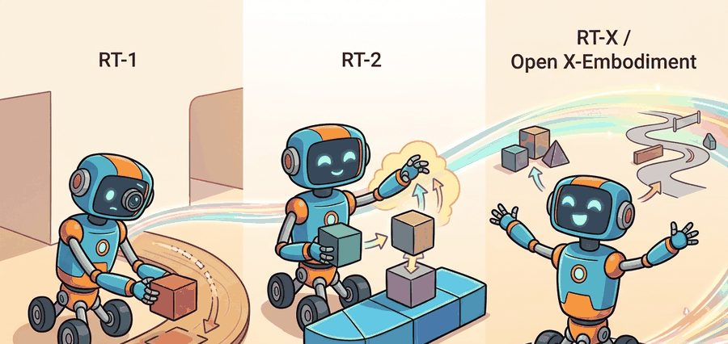

"Cross-embodiment robot policies are useful only when the dataset mixture and action conventions are visible."
A Grounded AI Agent

This section assumes familiarity with the vision-language model (VLM) to vision-language-action model (VLA) transition covered in section 34.1, particularly how language tokens are coupled to action tokens. The cross-embodiment data pooling introduced here is extended in section 34.3, where Octo and OpenVLA build open generalist policies on the same mixture principle, and further in section 34.4, where diffusion-based action heads replace the discrete token formulation used by RT-2.
Hand a kitchen-trained robot arm a slightly different gripper and it fails on the first grasp, yet pooling messy data from 22 different robots into one policy lifted success on unseen tasks by roughly 50 percent: that inversion is the puzzle the RT-1 to RT-2 to RT-X lineage (illustrated in Figure 34.2A) exists to explain. This section traces what changed at each step, states the dataset contract that makes cross-embodiment data pooling valid, and names the comparison traps that invalidate headline transfer numbers. Figure 34.2 below shows the shared inference loop that every system in this lineage runs at deployment. Vision feeds a VLA core. The core emits action tokens. An action head turns those tokens into commands for the controller, and execution evidence flows back to the next decision. The lineage differences (RT-1 to RT-2 to RT-X) live inside the VLA core and the data that trained it, not in this loop structure.
What changed at each step. RT-1 collected 130,000 real episodes on a fleet of Everyday Robot arms performing 700-plus kitchen and tabletop tasks, then trained a 35M-parameter EfficientNet-FiLM (Feature-wise Linear Modulation) encoder paired with a TokenLearner (a module that compresses a full image feature map down to a small set of learned tokens before the transformer attends over them) and a causal transformer to output 7 discrete end-effector tokens per step. The key constraint was that every episode came from one gripper morphology at one control rate. RT-2 replaced the dedicated encoder with a pretrained PaLI-X or PaLM-E backbone (large vision-language models pretrained on web-scale image-text data before ever seeing a robot demonstration) and co-trained on web image-text pairs alongside the same robot demonstrations, which allowed the 55B-parameter variant to follow novel semantic instructions (such as "pick up the object that could clean a surface") that never appeared in the robot dataset. RT-X then pooled data from 22 robot types across 21 institutions, forcing the action normalization problem into the open: a Universal Robots UR5 arm at 15 Hz and a Google Robot arm at 3 Hz must both emit tokens in the same 256-bin scheme after per-embodiment z-scoring (subtracting each robot's own action mean and dividing by its own standard deviation, so the same physical motion lands on the same token regardless of which robot recorded it) or the shared policy trains on contradictory signals.
Before reading on: if a UR5 arm at 15 Hz and a Google Robot arm at 3 Hz both emit 256-bin action tokens, what exactly does "bin 140" mean to a shared policy that has seen both? The answer determines whether cross-embodiment training helps or actively hurts.
How to compare results across the lineage without fooling yourself. A valid lineage comparison locks robot hardware, task family, evaluation split, and action convention in a single artifact before running any model. RT-1 vs RT-2 comparisons are only meaningful on the same Everyday Robot arm with the same 700 tasks and the same held-out test episodes. RT-X improvement claims (roughly 50% task-success gain over single-robot RT-1 on unseen manipulation tasks) are valid only for the specific hardware and task families reported in the Open X-Embodiment paper. Mixing results from a Franka Panda arm into a table that was computed on an Everyday Robot arm inflates or deflates transfer numbers without the reader knowing which direction.
Before accepting a cross-embodiment transfer claim, verify four things: which robot morphology generated the test episodes, what control frequency was used during normalization, whether the action convention (end-effector delta vs. joint position) is consistent across the rows being compared, and whether the LeRobot or Open X dataset metadata fields (control_frequency_hz, action_space, robot_type) are present and validated in the evaluation artifact.
Write an evidence row for a lineage comparison using one RT-1 task and one RT-X task from the Open X-Embodiment paper. Your row must include: source dataset name, robot model and gripper type, action space dimension, control frequency in Hz, camera configuration (wrist vs. overhead), held-out task description, and whether the test episodes were recorded on the same physical robot or a different unit. Identify which fields, if missing, would make the comparison invalid.
# Inspect the fields expected by a VLA dataset before training.
required_fields = ["observation.image", "observation.state", "action", "language_instruction"]
def validate_vla_contract(fields: list[str]) -> str:
missing_prefix = [field for field in fields if "." not in field and field != "action" and field != "language_instruction"]
assert not missing_prefix
return ", ".join(fields)
print("VLA dataset contract:", validate_vla_contract(required_fields))Use LeRobot or an OpenVLA-style repository before writing a custom robot dataset loader. The maintained stack handles episode schemas, image loading, action normalization, and train-eval splits that otherwise take hundreds of lines to rebuild.
A single Everyday Robot arm, trained only on its own kitchen demonstrations, fails completely the moment you hand it a different gripper or mount it on a mobile base. The RT-1, RT-2, RT-X lineage is the story of breaking that wall.
Each step answered one urgent question: can scale alone beat hand-coded skills (RT-1), can web-pretrained vision-language models make a robot understand novel commands it has never seen (RT-2), and can pooling data from 22 robot types actually transfer anything (RT-X / Open X-Embodiment)? By the end of this section you will be able to trace exactly where each system pushed the boundary, identify the dataset contract that makes cross-embodiment pooling valid, and spot the failure modes that invalidate headline numbers.
RT-1 showed that a transformer policy could learn many manipulation tasks from a large collection of real robot demonstrations. Its important design choice was not only scale. It represented low-level robot actions as discrete tokens, which let the model use sequence modeling machinery for physical control.
RT-1 controls the arm with a 7-dimensional end-effector command: x, y, z position, roll, pitch, yaw, and gripper open/close. Discretizing each dimension into 256 bins yields 7 tokens per timestep. "Move 3 cm left, close gripper" becomes [128, 115, 128, 128, 128, 128, 0], where 128 means no change along an axis and 0 means a closed gripper. The transformer predicts the 7 tokens autoregressively, treating control as language modeling over a small fixed vocabulary.
RT-2 moved the idea closer to a VLA foundation model. It used Internet-scale vision-language backbones and co-trained them to emit robot actions as token sequences. This move is called actions as language tokens. It lets the model share gradients between "what is a ripe banana?" and "how far should I open the gripper?" Web knowledge now drives some semantic generalization, such as recognizing objects or interpreting instructions, while robot data still supplies physical grounding. To see why this matters at scale: teaching a robot the concept "ripe banana" from robot demonstrations alone would typically require thousands of labeled grasp attempts; because the VLM already encoded that concept from web images, a few hundred robot episodes can often suffice for a novel semantic instruction, illustrating the order-of-magnitude data savings rather than a figure reported in the RT-2 paper itself.
RT-2 takes a pretrained VLM (such as PaLI-X or PaLM-E) whose output vocabulary covers natural language. Robot actions are represented as text tokens: the value "0.032" for a gripper dimension becomes the string token "0.032" in the model's existing vocabulary, or the bin index is mapped to a reserved token. During co-training, robot demonstration episodes and web image-text pairs are interleaved in the same batch. The model sees a robot image plus an instruction and must predict either a natural language response or an action token sequence, depending on the example type. This shared gradient signal is why the model can say "that is a ripe banana" (web knowledge) and also predict the wrist angle needed to grasp it (robot data), without maintaining two separate model weights.
RT-1 scaled robot demonstrations, RT-2 fused web semantics with robot actions, and RT-X asked whether pooled data from many embodiments could improve transfer across robots.
Open X-Embodiment made the dataset question impossible to ignore. Instead of treating every robot as a separate island, it standardized data from many institutions and trained RT-X variants across a shared mixture. The result was not universal robot intelligence. The result was a clear empirical lesson: carefully pooled robot data can produce positive transfer when the action and observation interfaces are normalized enough to learn from. In the Open X-Embodiment evaluation, RT-X trained on the 22-robot mixture improved task success on unseen manipulation tasks by roughly 50 percent compared to single-robot RT-1 baselines on the same hardware, despite the model having never seen those exact tasks in isolation: pooling 22 robots outperformed training on one.
Cross-embodiment learning needs a common language for action. A 7-dimensional end-effector command can represent position, orientation, and gripper state for one arm, but missing dimensions, different control rates, and different grippers must be handled explicitly. Otherwise the model sees a data mixture whose symbols do not mean the same thing.
Input: A set of robot datasets $\mathcal{D} = \{D_1, D_2, \ldots, D_K\}$ from $K$ embodiments, each with raw observations $o_t$, actions $a_t$, and metadata $m$ (control frequency $f_{\text{hz}}$, action dimension $d$, gripper convention)
Output: A normalized mixture dataset $\mathcal{D}^*$ with a shared observation-action interface ready for joint policy training
observation.image, observation.state, action, language_instruction, and control_frequency_hz. Reject any episode missing a required field.So far: each source dataset is field-checked, resampled to a shared control rate, padded with a validity mask to a common action width, and z-scored per embodiment, four separate alignment steps that must all hold before any tokenization or mixture weighting begins.
Think of the embodiment token like a chef walking into a shared kitchen and first announcing which cuisine they are cooking tonight. The same kitchen stocks tools for French, Thai, and Japanese cooking, but the moment the chef says "Thai tonight," every subsequent decision about heat level, seasoning amounts, and plating style snaps into the right register. Without that announcement, the kitchen would average across all cuisines and produce something incoherent. The embodiment token is that announcement: a single prefix that primes the transformer to interpret all subsequent action dimensions through the lens of one specific robot's movement vocabulary, rather than averaging across every robot in the mixture.
Trace the RT-X ingestion pipeline on the x-axis end-effector delta for two robots, then watch why the same raw motion lands in the same token. UR5 at 15 Hz records a 0.6 cm step: raw delta $a = 0.006$ m, with per-dimension stats $\mu_{\text{UR5}} = 0.000$, $\sigma_{\text{UR5}} = 0.004$. The Google Robot at 3 Hz records a 3.0 cm step covering the same ground per unit time: raw delta $a = 0.030$ m, with $\mu_{\text{Google}} = 0.000$, $\sigma_{\text{Google}} = 0.020$. Step 1, z-score each: UR5 gives $\hat{a} = (0.006 - 0.000) / 0.004 = 1.5$; Google gives $\hat{a} = (0.030 - 0.000) / 0.020 = 1.5$. Both land at the same normalized magnitude, exactly as intended, because the larger raw delta is divided by a larger per-embodiment $\sigma$. Step 2, discretize into 256 bins where bin 128 encodes zero and one standard deviation spans roughly 32 bins: $128 + (1.5 \times 32) = 176$. Both robots emit token 176 for "move a comfortable step right." Now break it: skip the z-score and feed raw meters into the same binning. UR5's 0.006 maps near bin 129 (a near-no-op), while Google's 0.030 maps near bin 145, so the shared policy sees two different tokens for the same gesture and learns a contradiction. The per-embodiment $\sigma$ is the whole trick.
When adding a new robot to an Open X-style mixture, set the control_frequency_hz metadata field before any model work: the LeRobot dataset schema stores this per-episode, and a mismatch between the recorded frequency and the field value silently corrupts action delta magnitudes during normalization. Use lerobot.common.datasets.utils.compute_stats to inspect per-dimension action mean and standard deviation after ingestion; values outside the range [-3, 3] after z-scoring are almost always a frequency or unit mismatch, not a policy failure. Fix the metadata first, recompute stats, and retrain rather than adjusting the action head to compensate.
A dataset that mixes robots without aligning their metadata is not a dataset: it is a collection of contradictions waiting to corrupt training. The lineage also exposes an evaluation trap. If RT-X improves one robot because another robot contributed useful examples, the comparison must be co-computed on the same task family and split. A table that mixes results from different robots, different seeds, or different episode filters can look stronger than the evidence supports.
The Open X-Embodiment collaboration applied exactly this normalization-and-pooling recipe to ship RT-X, a single policy trained on data from 22 robot types across 21 institutions. By aligning control frequencies, masking missing action dimensions, and conditioning on an embodiment token, the team reported roughly a 50 percent task-success improvement on unseen manipulation versus single-robot RT-1 baselines on the same hardware. The same data contract now underpins production generalist stacks like LeRobot and OpenVLA, where adding a new arm starts with metadata alignment, not retraining from scratch.
Suppose a lab adds a new gripper to an Open X-style mixture. The first engineering step is not model training. It is metadata alignment: camera calibration, action scale, control frequency, gripper convention, language labels, and train-test splits. The model can only generalize across embodiments if the data tells it what each embodiment means.
Once that metadata contract is in place, the same three design axes RT-1, RT-2, and RT-X first isolated reappear in every policy that came after them.
Modern systems such as Octo and OpenVLA, SmolVLA, pi-zero, GR00T, and Gemini Robotics all inherit the lineage question: how much of the policy comes from robot data, how much comes from web-scale perception and language, and how much comes from the chosen action head? RT-1, RT-2, and RT-X are not historical footnotes. They define the axes that current systems still vary.
A model can know the word "spatula" from the web and still fail to slide a real spatula under a pancake. Web pretraining helps with semantics, but contact, friction, reachability, compliance, and recovery still come from embodied data and control design.
A common assumption is that pooling data from more robot types automatically improves policy performance for every target robot. This assumption is wrong. A UR5 arm at 15 Hz and a mobile manipulator at 3 Hz encode fundamentally different physical magnitudes in their action tokens. Without per-embodiment frequency alignment, z-score normalization, and a validity mask over padded dimensions, the shared policy trains on contradictory signals. It can then produce unsafe commands on hardware that cannot execute them. Cross-embodiment transfer depends on metadata quality and normalization correctness, not on raw dataset size. Before adding a new robot to the mixture, verify control frequency, action space convention, and gripper type, then audit per-dimension statistics before any training run.
Read the lineage as a sequence of interface decisions: what changed in the data mixture, what changed in the action head, and what changed in transfer across robots.
Explain the difference between RT-1, RT-2, and RT-X without using the word "bigger." Your answer should mention robot demonstrations, web knowledge, and cross-embodiment data.
Active directions (2024-2026):
1. Diffusion and flow-matching action heads replacing discrete tokens. The RT-1/RT-2 discretization (256 bins per dimension) discards fine motor precision and struggles with multimodal action distributions. Pi0 (Physical Intelligence, 2024) couples a pretrained VLM backbone to a flow-matching action expert trained on a large cross-embodiment mixture, achieving dexterous manipulation that discrete-token policies cannot match. Concurrent work from Google DeepMind (RoboDreamer, 2024) and the OpenVLA-OFT fine-tuning recipe (2024) confirms that continuous action heads close a consistent gap over autoregressive token prediction on contact-rich tasks.
2. Scalable internet-pretrained VLAs with embodiment adapters. Rather than co-training from scratch, recent work freezes a large VLM and attaches lightweight action adapters. Gemini Robotics (Google DeepMind, 2025) routes perception through a frozen Gemini backbone and trains only the action head and embodiment adapter, cutting the robot data requirement by an order of magnitude while preserving semantic generalization. GR00T N1 (NVIDIA, 2025) follows the same pattern for humanoid control. The shared finding is that frozen internet representations transfer more than previously expected, once the adapter is conditioned correctly on embodiment metadata.
3. Automatic dataset mixture optimization. RT-X used hand-tuned per-embodiment weights. The 2024-2025 wave of generalist policies (Octo follow-ons, RoboFlamingo fine-tuning studies, and the Open X-Embodiment scaling analysis from UC Berkeley, 2024) shows that mixture weights matter as much as dataset size: a bad mixture can cause the target-robot success rate to drop below the single-embodiment baseline even when total data volume increases. Groups at Stanford and CMU (2024-2025) are applying data-influence estimation and multi-armed bandit sampling to tune mixture weights online during training rather than treating them as hyperparameters.
Open problem for a PhD student: There is no principled, scalable method to predict, before training, which source embodiments will help or hurt a target robot given a fixed compute budget. An evaluable project would combine offline data-influence scores (for example, TracIn or DataInf adapted to trajectory-level losses) with a small proxy training run on a subset of the mixture, then validate the predicted transfer ranking against held-out hardware evaluations across at least four distinct robot morphologies from the Open X-Embodiment dataset. A working solution would reduce the engineering cost of adding a new robot to an existing VLA mixture from multiple GPU-weeks of ablation to a single lightweight scoring pass.
The RT lineage teaches the central VLA tradeoff: semantic generalization wants broad pretraining, while motor reliability wants clean, embodiment-aware robot data.
Design a cross-embodiment data table for two robot arms with different grippers. Include fields for action dimension, control rate, camera views, gripper convention, and missing dimensions.
Beginner (weekend): Build a minimal VLA dataset validator using LeRobot that ingests any Open X-Embodiment episode file, checks for the required fields (observation.image, observation.state, action, language_instruction, control_frequency_hz), z-scores each action dimension, and flags any dimension whose normalized values exceed 3 as a likely frequency or unit mismatch. The key challenge is learning the LeRobot episode schema well enough to write a generic validator that works across robot types without hard-coding field names. Intermediate (1-2 weeks): Fine-tune OpenVLA on a single-task manipulation dataset recorded in PyBullet (for example, pick-and-place of a cube), then add a second robot morphology with a different gripper type from a simulated LeRobot dataset, normalize both to a shared control frequency, and compare single-embodiment versus two-embodiment task success using the same held-out evaluation episodes. The key challenge is correctly aligning action spaces across the two morphologies so the shared policy receives consistent signals rather than contradictory ones.
Goal: Empirically test whether action normalization decides cross-embodiment transfer, by training one shared policy on two simulated robot arms and comparing it to single-arm baselines.
Tools needed: Python with lerobot installed (pip install lerobot), two LeRobot-format datasets with different control frequencies (for example a 10 Hz and a 30 Hz pick-and-place set, or one real Open X-Embodiment subset downsampled to two rates), and a single consumer GPU or a free cloud GPU session.
Steps: Load both datasets, run lerobot.common.datasets.utils.compute_stats to get per-dimension action mean and standard deviation, then z-score and bin each action into 256 bins. Train three small policies for an equal number of steps: arm-A only, arm-B only, and the pooled A+B mixture with an embodiment id prepended.
What to vary: (1) toggle z-score normalization on versus off before binning; (2) resample both datasets to a shared target rate versus leaving native rates; (3) include versus omit the embodiment token.
What to observe: Per-arm held-out task success for each configuration. You should see the pooled-with-normalization run match or beat the single-arm baselines, while the pooled-without-normalization run degrades below them, confirming that metadata alignment, not raw data volume, drives transfer. Plot any normalized action dimension whose magnitude exceeds 3 and check it against a frequency or unit mismatch.
Section 34.3 turns from the Google lineage to open generalist policies that readers can inspect and adapt.
Octo Model Team et al. (2024). "Octo: An Open-Source Generalist Robot Policy." arXiv.
Octo is a transformer-based diffusion policy pretrained on Open X-Embodiment trajectories and designed for flexible fine-tuning. It is the clearest open reference for generalist policy initialization before the Internet-pretrained VLA wave.
Kim et al. (2024). "OpenVLA: An Open-Source Vision-Language-Action Model." arXiv.
OpenVLA connects open VLM backbones to robot action generation and provides a practical codebase for fine-tuning. Practitioners should read it alongside the GitHub repository before adapting an open VLA to a new robot.
RT-2 made the action-as-language move explicit by fine-tuning PaLI-X and PaLM-E backbones to emit Everyday Robot end-effector actions as tokens. Read it for the web-image-plus-robot-demonstration co-training recipe, and for the limits it documents when transferring web semantics into contact-rich motor control on the physical arm.
This paper introduced the cross-institution robot data mixture and RT-X models. It is essential for understanding why embodiment metadata, action normalization, and dataset mixture design matter.
Brohan et al. (2022). "RT-1: Robotics Transformer for Real-World Control at Scale." arXiv.
RT-1 showed that a transformer policy trained on large real robot data could produce discretized low-level robot actions from images and instructions. It is the starting point for the chapter lineage and useful for readers who want the engineering details behind large-scale robot data collection.
Hugging Face. "LeRobot." GitHub.
LeRobot is the practical open-source toolkit used here for datasets, policy training, evaluation, and low-cost robot workflows. Engineers should start here before writing custom data loaders or training loops.